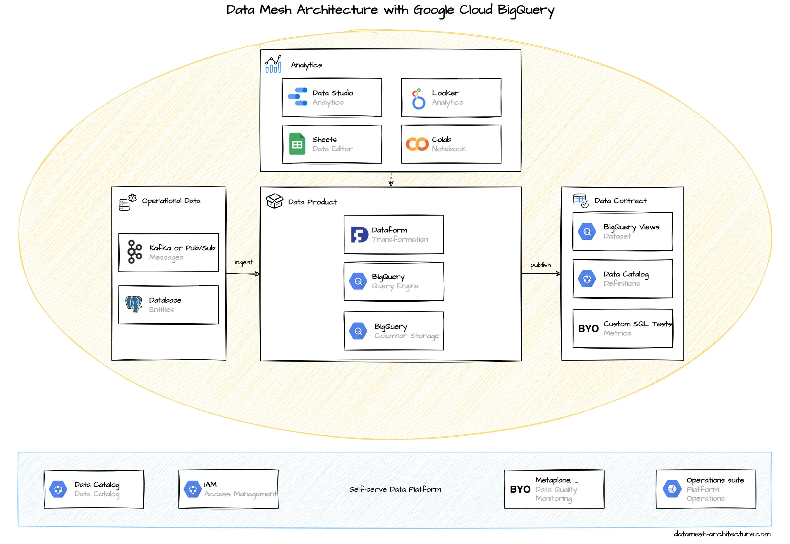

In our experience, many Data Mesh implementations rely on Google Cloud Platform (GCP) as a common infrastructure, at least for analytical data. It is a highly integrated platform. Everything is available as developer-friendly self-service. The on-demand query performance of BigQuery is remarkable, especially for large data sets.
Every domain team typically gets their own GCP project under an organization resource. There might be separate projects for each stage such as test and production.
BigQuery is the central component for storing analytical data. BigQuery is a columnar data store and can perform efficient JOIN operations with large data sets. It supports access to files stored in Google Cloud Storage as external tables , so it can also be used as a data lake, if required. Manual data is easily edited with Google Sheets .
BigQuery supports both, batch ingestion and streaming ingestion. When the operational system architecture relies on Apache Kafka, then streaming through Kafka Connect Google BigQuery Sink Connector is recommended. In a Google Cloud native setup with messages in Pub/Sub, then a simple Cloud Function can forward events to BigQuery. (Google itself points to Dataflow, but we think that is overkill.) For CDC database replication to bigquery, consider Data Fusion and Dataflow, based on your operational database.
The simplest way to preprocess and clean raw data is with SQL views. Special transformations can be implemented with user-defined functions written in SQL or JavaScript. The SQL views can be implemented to perform directly on raw data or triggered as scheduled queries that materialize in a new table. If this does not suffice, more complex pipelines can be implemented with Dataflow (Apache Beam) or Dataform (a dbt clone).
For analytics, BigQuery supports SQL queries with a number of available user-defined functions . For basic visualization and report generation, Google Data Studio is well-integrated and can be used for free. A good integration also exists for Google Sheets and Colab , an online Jupyter Notebook service. More advanced analytics is done with Looker , which was acquired by Google in 2019.
Data Products are usually simple BigQuery tables or views in a special dataset. The access to these data is managed by the domain team with Google IAM roles. Google has an integrated Data Catalog , which can get pretty cluttered. It can be used to document and tag datasets as data products, but we see that many users still stick on a Wiki page with available data products listed.
Google recently announced Dataplex to centrally manage, monitor and govern data and promotes it for data mesh use cases. We currently have no hands-on experience with it.